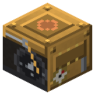

Steam Engine
Era 2Steam and mechanics

idle

running
Steam -> shaft power. Uses steam only under load. Shafts run straight, turn with a gearbox, machines sit beside a pulley.
Parameters
| Era | 2 — Steam and mechanics |
|---|---|
| Multiblock | no |
| Drive | drives the shaft |
| Tanks, mB | 8000 |
| What it does | steam -> shaft |
| Input energy | steam |
| Output | shaft 8 hp |
| Made of | see §2 |
| hp | 8 |
Numbers
| steam per 1 hp on the shaft | 1 mB/hp |
|---|---|
| steam engine | 8 hp |